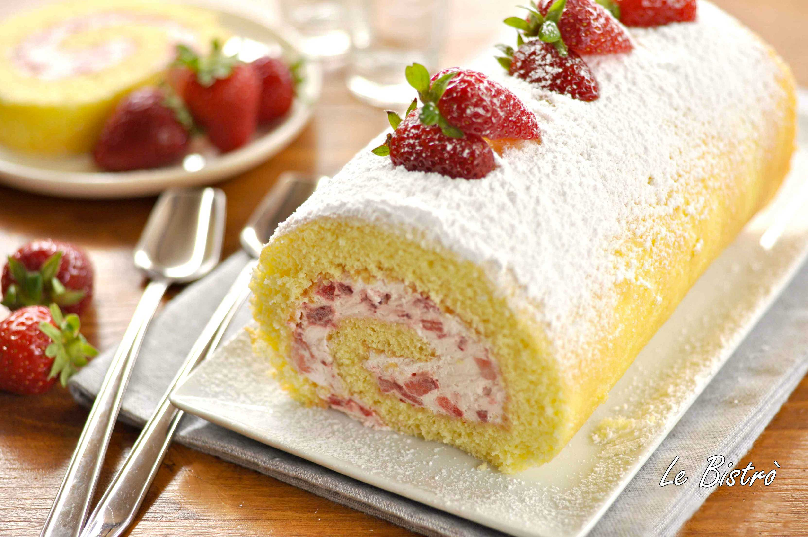

Rotolo dolce con panna e fragole
Porzioni: 8
Preparazione:30 minuti
Cottura:8/9 minuti
Riposo: 30 minuti in frigo
Ingredienti
Per il biscotto (teglia 30x40 cm)
- 4 uova
- 150 g zucchero semolato
- 90 g di farina 00
- 1 cucchiaino di lievito in polvere
Farcitura
- 150 g di panna fresca da montare
- 50 g di zucchero a velo
- marmellata di fragole o fragole a pezzetti
Procedimento
- Impostare il forno statico a 220°
- Sbattere le uova e il lievito. Aggiungere lo zucchero e continuare a montare finchè il composto risulta chiaro.
- Aggiungere la farina
- Imburrare la carta forno e cucinare in forno statico a 220° per 8/9 minuti.
- Tirare furoi la cialda e capovolgere il contenuto su un altro pezzo di carta forno. Lasciar intiepidire prima di rimuvore la carta forno di cottura (consiglio di coprirlo anche con un canovaccio in modo tale che si mantenga l'umidità)
- Tenere il rotolo tra le due carte forno e lasciar raffreddare completamente prima di farcire
- Farcire con pana e fragole (o marmellata/ nutella)
- Lasciar riposare in frigo per 30 minuti e poi servire

Torna alla pagina iniziale